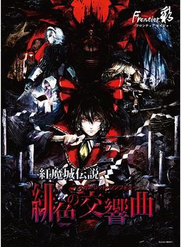

- Welcome to Touhou Wiki!
- Please register to edit. For assistance, check in with our Discord server or IRC channel.
Koumajou Densetsu: Scarlet Symphony
Koumajou Densetsu: Scarlet Symphony | |
|---|---|
|
 | |
| Developer |
Frontier Aja |
| Publisher |
Frontier Aja |
| Released |
Trial: 2009-08-06 |
| Genre |
Action Adventure Game |
| Gameplay |
Single-player |
| Platforms | |
| Requirements |
Intel R Core 2 Duo processor, 1 GB RAM, 64 MB VRAM, DirectX 9.0c, DirectSound |
Koumajou Densetsu: Akeiro no Koukyoukyoku (紅魔城伝説 緋色の交響曲, lit. "Legend of Scarlet Devil Castle: Scarlet Symphony") is a fan-made Touhou Project Castlevania-esque game created by Frontier Aja, featuring Reimu Hakurei as its protagonist. It was succeeded by Koumajou Densetsu II: Stranger's Requiem.
The 1.03 patch includes an English and French translation for the story mode.
Gameplay[edit]
- Main article: Gameplay
Story[edit]
Gensokyo is covered in a scarlet mist... Again. Reimu Hakurei sets out to the Scarlet Devil Mansion, since that was where the previous scarlet mist incident happened previously, to fix this problem. Along the way, she meets Marisa Kirisame, who joins Reimu, and Cirno, who attacks Reimu for making fun of her. Eventually, Cirno ends up joining Reimu's party due to unforeseen circumstances.
Once Reimu and her get to the Scarlet Devil's place, they find a great castle. Hong Meiling guards the gate to the castle. Reimu defeats her with relative ease. Reimu enters the castle, and runs into Sakuya Izayoi. Reimu asks where Remilia Scarlet is, and Sakuya says she is resting in her chambers. Sakuya then proceeds to "take out the trash." Sakuya is defeated, but she warns that they are only reaching towards their death. As Reimu and the party move on, they meet Alice Margatroid, who is said to be there to play. Marisa doesn't believe this, as everyone knows Alice has no friends. They fight, and Alice loses. The three proceed to the arena part of the castle, and meet Suika Ibuki, who is there because she wanted to go somewhere other than the Hakurei Shrine for once. The party defeats Suika, and Suika says after this incident is solved, they should throw a party back at the shrine.
In the library, they meet Patchouli Knowledge, and defeat her. Reimu then proceeds up to the clock tower, where the moon begins to turn a scarlet color. On the top of the tower, they are intercepted by Sakuya once more. Sakuya is defeated again, but the heroines wonder what Remilia's plan is. Apparently, Sakuya does not know what Remilia is doing, and was only instructed to build the castle. Patchouli states that the last time Remilia was seen, she was looking through an ancient book. Reimu sees the potential dangers in this, and proceeds to the chamber. There, they are greeted by Remilia Scarlet. She says she was waiting for Reimu to show up. Remilia has built the castle, spread the scarlet mist, and lured Reimu and her party for her plan...
To excavate buried treasure. Remilia read in a book about a treasure that lies underneath a red castle, so she instructed her servants to build a red castle. She spread the scarlet mist because the treasure must be excavated during daytime, as she cannot work during daytime normally. She lured Reimu to the castle so they can help excavate the treasure. Before she follows up her plan, Reimu interrupts. She says the treasure is only a legend based on the "Red Mountain Castle" on Mt. Akagi, and the treasure doesn't exist. It's only a legend from the outside world. With the incident now solved, Reimu proceeds to leave. Just then, Remilia changes her plan, saying she lured them to the castle so they can fight under the scarlet moon. Reimu and Remilia battle. Remilia is defeated, but she orders Meiling, Patchouli, and Sakuya to attack them. After they are defeated once again, and Remilia once again fights Reimu. After much struggle, Reimu and her party is victorious. With the incident solved, they all have a party back in the Hakurei Shrine.
A few days passed, and Reimu heads to the castle once again to ask why the castle hasn't been taken down. Along the way, she is attacked by Rumia. Reimu proceeds to the castle and asks questions, but Meiling refuse to answer. Sakuya says now isn't the time, as they are running across a problem. When she meets Patchouli, she states that it isn't Remilia's fault, but "her." Reimu enters the basement of the castle, and she meets Flandre Scarlet, who is angry that once again she is ignored and everyone had a party without her. Flandre attacks Reimu out of spite. After a hard battle, Flandre is defeated, but the fighting has calmed her down.
Additional Information[edit]
Fandom[edit]
- The game is unofficially referred to as "Touhouvania" in the western fandom.
- Castlevania Fighter is a boss rush game starring heroes and bosses from divers Castlevania games, including Reimu Hakurei and Sakuya Izayoi as playable characters.
External links[edit]
- Official website (Down for the time being)
- Developer's website
- Updates for the game (under 紅魔城伝説 緋色の交響曲)